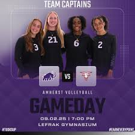

This is my last year at Milton Academy. Next year I will be attending Amherst College. I am very excited to be going to Amherst because it has a great computer science program and a beautiful campus. I am looking forward to meeting new people and experiencing college life.
